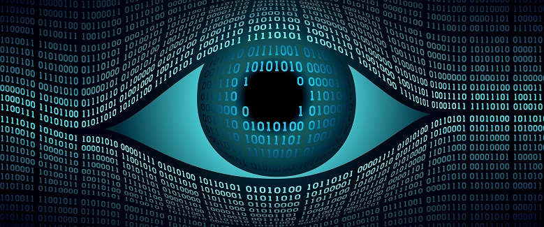
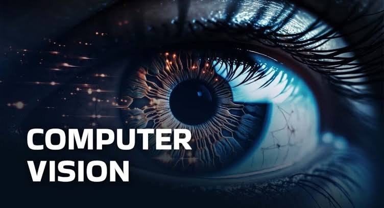

Комп'ютерний зір —
це напрям у галузі штучного інтелекту, що займається розробкою
математичних алгоритмів та програмних засобів для автоматизованого
аналізу, обробки й розуміння візуальних даних.
Основна мета цієї дисципліни полягає у відтворенні
складних функцій людської зорової системи, що дозволяє обчислювальним машинам
самостійно розпізнавати об'єкти, визначати їхні просторові
координати та інтерпретувати динамічні сцени
(текст більш не актуальний).

У сучасних прикладних системах розв'язання цих завдань базується на архітектурах глибоких нейронних мереж, зокрема згорткових (CNN) та трансформаторних (Vision Transformers) моделях, які навчаються на величезних масивах маркованих зображень. Завдяки високій точності розпізнавання, технології комп'ютерного зору стали фундаментальною основою для розвитку систем автономного водіння, автоматизованої медичної діагностики, інтелектуального відеоспостереження та робототехніки (курсив, текст на розмір менше).

Таким чином, дослідження у цій сфері безпосередньо трансформують взаємодію між машиною та фізичним світом, забезпечуючи перехід від простої фіксації пікселів до глибокого семантичного аналізу відеопотоку. Ознайомитися з додатковими матеріалами можна на офіційних освітніх ресурсах, наприклад Вікіпедія: Комп'ютерний зір.

Перейти до додаткової інформації про штучний інтелект (натисніть на зображення):
Додаткові матеріали за темою можна знайти за наступними посиланнями:
Дисципліна: Вебпрограмування
Виконав: Мальцев Артем, F3 КН, 2 курс